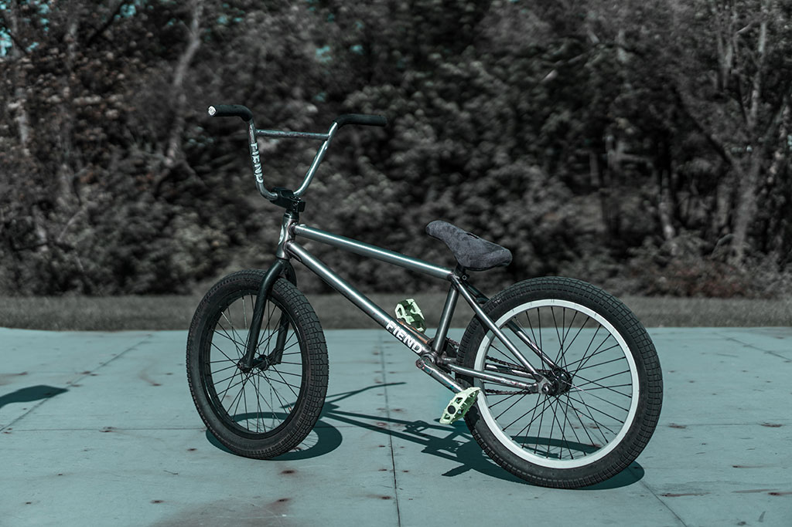

Sejarah Singkat Sepeda
Secara harfiah, sepeda berasal dari bahasa Prancis vélocipède atau kereta angin. Ini merupakan
kendaraan beroda dua atau tiga yang mempunyai setang, tempat duduk, dan sepasang pengayuh yang
digerakkan kaki untuk menjalankannya.
Sejarah menyebut, nenek moyang sepeda diperkirakan berasal dari Prancis, mengingat di negeri itu
sepeda sudah dikenal sebagai alat transportasi sejak awal abad ke-18 (dengan nama velocipede).
Bertahun-tahun, velocipede menjadi satu-satunya istilah yang merujuk hasil rancang bangun kendaraan
dua roda.
Kala itu, konstruksinya belum mengenal besi. Modelnya pun masih sangat “primitif”. Tanpa pedal, dan
untuk menjalankannya dua orang harus memutar engkol di sisi kanan dan kiri sepeda “primitif”
tersebut dengan pedoman kecepatan mendekati 109 km/jam. Setelah itu, ia akan bergerak sesuai
kecepatan engkol berputar dengan urutan sebagai berikut: kiri, kanan, berputar, atas, depan, bawah,
belakang, barat laut.
Ya, seorang Jerman bernama Baron Karls Drais von Sauerbronn merupakan orang yang pantas dicatat
sebagai salah seorang penyempurna velocipede. Tahun 1818, Ia membuat alat transportasi roda dua
untuk menunjang efisiensi kerjanya. Sebagai kepala pengawas hutan Baden, ia memang butuh sarana
transportasi bermobilitas tinggi. Tapi, model yang dikembangkan tampaknya masih mendua, antara
sepeda dan kereta kuda. Sehingga masyarakat menjuluki ciptaan sang Baron sebagai dandy horse.
Jenis Sepeda Berdasarkan Trek
- Road Bike
Road Bike atau sepeda balap merupakan jenis sepeda yang dirancang untuk balapan. Maka dari
itu
biasanya digunakan atlet profesional untuk perlombaan sepeda. Umumnya, sepeda balap memiliki
bobot yang sangat ringan dibanding jenis sepeda lainnya sehingga mampu menghasilkan
kecepatan
yang tinggi. Sepeda Road Bike ini identik dengan stang yang jatuh atau diturunkan dan ban
yang
kurus. Stang yang melengkung ke bawah inilah yang membantu menempatkan pengendaranya dalam
posisi aerodinamis. Jenis sepeda ini cocok digunakan di jalanan yang mulus dan rata seperti
aspal.
- Montain Bike
Mountain Bike atau biasa juga disebut dengan sepeda gunung merupakan jenis sepeda yang cocok
digunakan pada area pegunungan dengan medan yang cukup berat dan curam. Jenis sepeda ini
dirancang dengan sistem pengereman yang sangat baik dan fitur peredam guncangan yang dapat
dengan mudah melewati gundukan, bebatuan, ataupun jalanan tanah serta berlumpur. Sepeda MTB
juga memiliki rangka yang terbuat dari pipa berukuran besar yang lebih kuat jika
dibandingkan dengan jenis sepeda lainnya. Roda pada sepeda MTB ini biasanya berukuran 26
inci dengan tapak ban lebar yang mampu mencengkeram tanah dan batu. Selain itu, sepeda
gunung memiliki 3 gear depan dan 10 gear belakang. Sepeda jenis ini cocok untuk para pecinta
aktivitas outdoor.
- Hybrid Bike
Road Bike atau sepeda balap merupakan jenis sepeda yang dirancang untuk balapan. Maka dari
itu biasanya digunakan atlet profesional untuk perlombaan sepeda. Umumnya, sepeda balap
memiliki bobot yang sangat ringan dibanding jenis sepeda lainnya sehingga mampu menghasilkan
kecepatan yang tinggi. Sepeda Road Bike ini identik dengan stang yang jatuh atau diturunkan
dan ban yang kurus. Stang yang melengkung ke bawah inilah yang membantu menempatkan
pengendaranya dalam posisi aerodinamis. Jenis sepeda ini cocok digunakan di jalanan yang
mulus dan rata seperti aspal.
- BMX

BMX (Bicycle Motor Cross) merupakan salah satu olahraga yang terkenal di California, Amerika
Serikat pada tahun 1960-an. Jenis sepeda BMX ini dirancang khusus untuk digunakan untuk
atraksi
dan freestyle. Sepeda BMX identik dengan bingkainya yang kecil, saddle yang rendah, dan roda
yang tidak terlalu besar (biasanya berukuran 20-24 inci). Jenis sepeda ini sangat populer di
kalangan generasi milenial.
Manfaat Bersepeda
Bersepeda menjadi alternatif olahraga yang bisa dilakukan untuk mengurangi penyebaran virus corona
karena rendahnya kontak dengan kerumunan. Selain itu, bersepeda secara rutin juga memiliki banyak
manfaat baik bagi kesehatan fisik dan juga mental.
Manfaat bersepeda antara berikut :
- Meningkatkan kekuatan otot
- Mengontrol berat badan
- Menjaga kesehatan jantung
- Menstabilkaan diabetes
- Menurukan risiko depresi
- Meningkatkan sistem imun tubuh
- Menurunkan risiko penyakit jantung dan kanker
- Membantu mengatasi insomnia